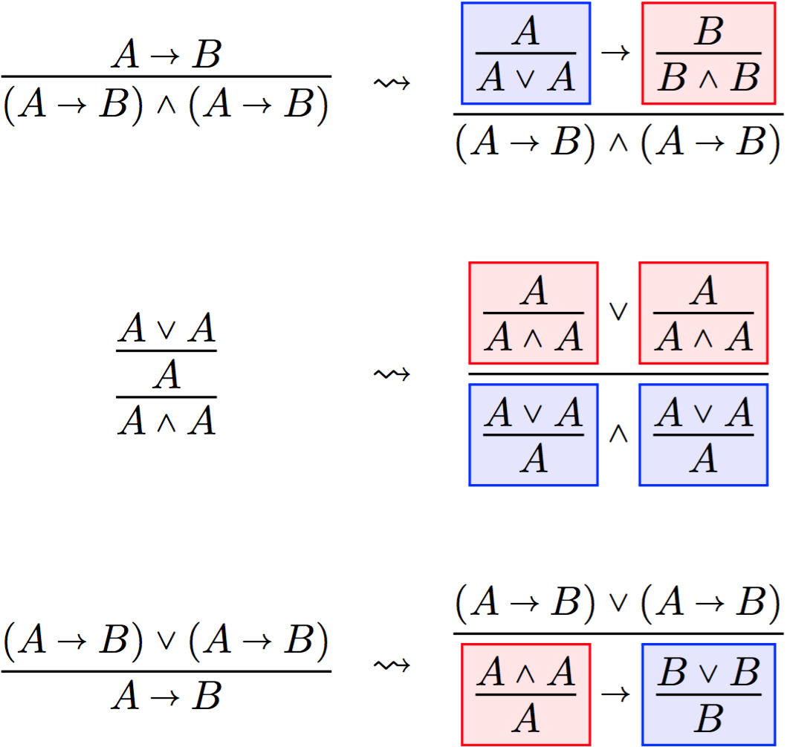
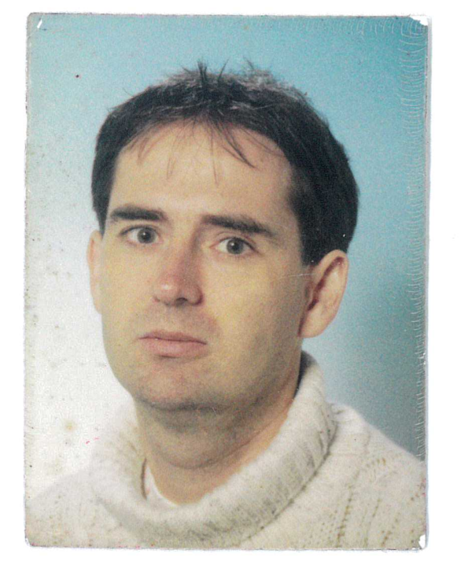

This project aims to develop a new approach to efficient evaluation in the lambda-calculus, based on deep-inference proof theory.
The lambda-calculus is a minimal but fully expressive, theoretical programming language. It forms the basis of functional programming languages such as Haskell, and efficiency improvements in the lambda-calculus can be applied to create compilers that produce faster programs. Such improvements can be efficient computation strategies, or changes to the syntax, or both.
The lambda-calculus is linked to proof theory by the Curry-Howard correspondence: types are logical formulas, programs are proofs, and computation is proof normalization (reduction to a well-behaved form). Conversely, for a given proof system we can ask what its computational interpretation is.
Deep inference is a modern branch of proof theory characterized by its flexibility in composing proofs. This allows it to capture logics not expressible in other proof systems, and to yield surprisingly good complexity results. Key to these results is the medial rule scheme, a core innovation of deep inference that sets it apart from related formalisms. The basis of the project is the discovery that the medial enables computation steps associated with optimal efficiency.
Sharing graphs are a graphical formalism for lambda-calculus computation using sharing and unsharing. Sharing is the multiple use of a single expression, which then needs to be evaluated only once, improving efficiency. Unsharing is a counterpart that enables the shared use of partial expressions. In theory, sharing graphs are optimally efficient for lambda-calculus. However, in a real-world setting, the control mechanism that manages duplication, the oracle, incurs too much overhead cost, and they are not used in practice.
The discovery on which the project is based is that the medial rule scheme enables computation with sharing and unsharing, as in sharing graphs, but without the need for a control mechanism other than the structure of the proof itself.
The project will develop a computational interpretation of the medial. An initial investigation led to the atomic lambda-calculus, the first typed lambda-calculus with sharing and unsharing, and the first lambda-calculus to capture full laziness, a standard notion of efficiency, as a natural strategy. The project will build on this on three levels: structure, control, and measurement.
Structure: The project will develop a theory of proof normalization in deep inference for intuitionistic logic (associated with the lambda-calculus), where the medial replaces the need for a control mechanism. Based on the experience with the atomic lambda-calculus, the hypothesis is that the proof system adapts naturally to different levels of efficiency by varying the choice of proof rules.
Control: New control mechanisms will be derived from the structure of deep inference proofs. These will be used to implement various efficient strategies with sharing and unsharing in typed lambda-calculi and abstract machines.
Measurement: The project will use normalization in deep inference to construct a range of semantic tools to measure the efficiency of these calculi and control mechanisms. Here, the availability of a single underlying proof system provides a new and unique opportunity to compare strategies on an equal footing.
On the theoretical side, the project addresses several open questions in the literature: How to measure the efficiency of lambda-calculi with sharing? What is a global type system for sharing graphs? What is the computational meaning of deep inference? On the practical side, the typed lambda-calculi and abstract machines of the project are a basis for new and efficient ways of implementing functional programming languages.

The Functional Machine Calculus II: Semantics
Chris Barrett, Willem Heijltjes, and Guy McCusker | CSL 2023 | PDF
The Functional Machine Calculus
Willem Heijltjes | MFPS 2023 | PDF
Normalization Without Syntax
Willem Heijltjes, Dominic Hughes, and Lutz Strassburger | FSCD 2023 | PDF
A deep quantitative type system
Giulio Guerrieri, Willem Heijltjes, and Joe Paulus | CSL 2021 | PDF
Categorifying non-idempotent intersection types
Giulio Guerrieri and Federico Olimpieri | CSL 2021 | PDF
Factorize factorization
Beniamino Accattoli, Claudia Faggian, and Giulio Guerrieri | CSL 2021 | PDF
Decomposing probabilistic lambda-calculi
Ugo Dal Lago, Giulio Guerrieri, and Willem Heijltjes | FoSSaCS 2020 | PDF | Long version
Spinal atomic lambda-calculus
David Sherratt, Willem Heijltjes, Tom Gundersen, and Michel Parigot | FoSSaCS 2020 | PDF
Glueability of resource proof-structures: inverting the Taylor expansion
Giulio Guerrieri, Luc Pellissier, and Lorenzo Tortora de Falco | CSL 2020 | PDF
Abstract Machines for Open Call-by-Value
Beniamino Accattoli and Giulio Guerrieri | Science of Computer Programming | 2019 | PDF
Factorization and normalization, essentially
Beniamino Accattoli, Claudia Faggian, and Giulio Guerrieri | APLAS 2019 | PDF
Crumbling abstract machines
Beniamino Accattoli, Andrea Condoluci, Giulio Guerrieri, and Claudio Sacerdoti Coen | PPDP 2019 | PDF
Types by need
Beniamino Accattoli, Giulio Guerrieri, and Mario Leberle | ESOP 2019 | PDF